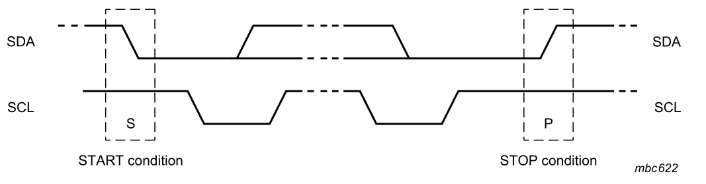
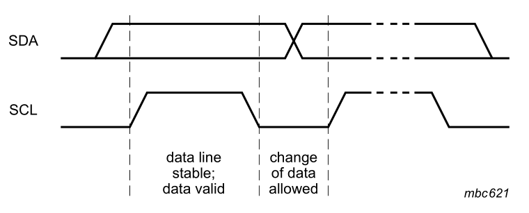
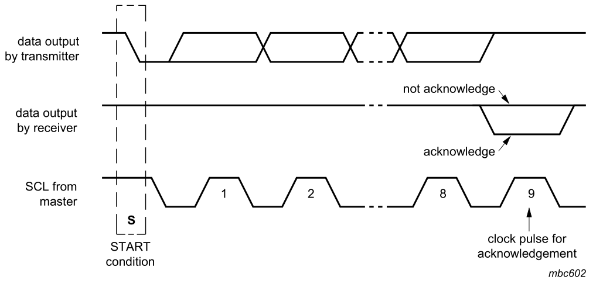
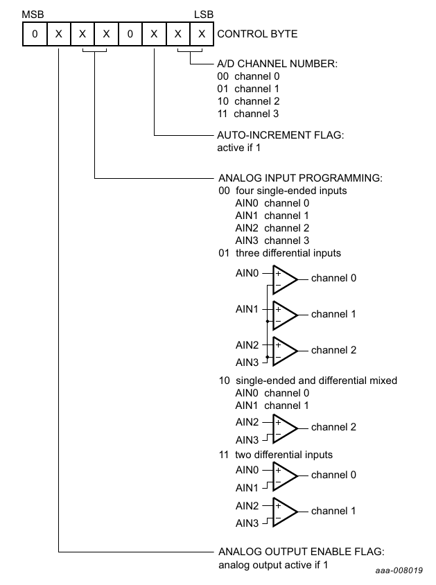

Como la mejor forma de ver cómo funciona algo es practicándolo, he escrito unas funciones para emular un puerto I2C por software para Raspberry Pi utilizando por debajo las funciones de WiringPi. Los ficheros están en el github del blog y poco a poco los iremos desgranando a lo largo de esta entrada.
| Logo de I2C: Philips, ahora NXP semiconductor |
{kind=link}
A los que ya conocéis las generalidades del bus, permitidme dar un repaso rápido para encaminar el artículo antes de ir a las profundidades.
A diferencia del 1-Wire, I2C tiene una línea de reloj dedicada. Eso quiere decir que el reloj lo controlamos nosotros. Y por eso no habrá problema si el tiempo de espera resulta ser 15us en lugar de 5us. Problema que sí se da en otros buses como 1-Wire.
Además es relativamente lento en el modo estándar. La frecuencia habitual de I2C es 100kHz. Indica la máxima frecuencia a la cual el dispositivo puede trabajar con fiabilidad, pero no la mínima, y de hecho puede ser tan baja como queramos. Como luego veremos se trata de un arma de doble filo, pues de no incorporar un timeout propio, un dispositivo puede dejar bloqueado el bus entero.
Protocolo físico
Empecemos por lo más general: sin contar la alimentación, el bus I2C consta de dos líneas de colector abierto.
Se dice que una salida es de colector abierto cuando lo único que se puede hacer con ella es ponerla a masa o no. Es decir, tiene dos estados: al aire y 0 voltios. Se hace así para que no haya problema si dos dispositivos "hablan" simultáneamente. Lo único que pasará es que ambos pondrán la linea a masa a la vez. El mensaje llegará corrupto, sí, pero a nivel eléctrico no tiene mayor implicación. No provoca ningún cortocircuito.
Como sólo podemos elegir si llevar la linea a nivel bajo o no, conectamos una resistencia de pull-up a positivo de alimentación. De esta forma la línea siempre está a nivel alto, salvo que algún terminal "tire" de ella y la lleve a 0. Cuando la suelte volverá a 1 de nuevo.
El valor recomendado para las resistencias de pull-up está entre 1k y 10k, pero funcionará bien hasta 100k. El único impacto que realmente tiene el que la resistencia sea mayor o menor es el tiempo de recuperación. Tened en cuenta que los pines de los integrados tienen una capacidad parásita. Así como los cables del bus. Dicha capacidad es como si fuera una "bolsa" que debe llenarse de electrones antes de llegar a un nivel lógico 1. Y se llena a través de, precisamente, la resistencia de pull-up.
Si la resistencia es muy grande, tardará más tiempo en alcanzar la tensión umbral de nivel alto (2.5 voltios en muchos casos). Si el tiempo de recuperación es demasiado grande no podemos conmutar la línea muy rápido o pondremos dos niveles bajos antes de que se hubiera alcanzado el nivel alto.
Si la resistencia es pequeña, la recuperación será más rápida. Pero también sufrirán más los transistores de los integrados, pues les obligamos a soportar una mayor corriente para llevar a linea a masa. Estos transistores soportan 3mA según la especificación para los modos normal y estándar y hasta 20mA en chips que utilicen otros modos rápidos. A todo esto, la capacidad parásita de un bus I2C suele ser muy pequeña; de lo contrario podría haber problemas de comunicación cruzada entre SCL y SDA.
El bus I2C, como decíamos, tiene dos líneas. Una llamada SCL y la otra SDA, para reloj y datos respectivamente. Todos los elementos que componen el protocolo físico se forman jugando con estas dos líneas. Vamos a repasar cuáles son estos elementos por encima, tendremos oportunidad de ampliarlos más adelante.
Cuando el máster (o uno de los máster, ya lo veremos) inicia una conversación, lleva y mantiene las líneas en nivel bajo. Primero la línea de datos y luego la de reloj. Es lo que se llama condición de inicio, o simplemente start.
|  |
| Señales de start y de stop. NXP Semiconductor. |
{kind=link}
A partir de este momento, la linea de datos no puede cambiar de estado mientras el reloj esté en nivel alto.
Para transmitir un valor lógico debemos recordar dos cosas, una es que el control de la línea de reloj siempre corresponde al maestro, y otra que el esclavo lee el estado de SDA durante el flanco de subida de SCL y lo fija durante el flanco de bajada del pulso de reloj inmediatamente anterior..
Para transmitir un 1 o un 0 hacia el esclavo, el maestro libera la línea SDA o la mantiene a 0 y acto seguido sube y vuelve a bajar el reloj. Durante este pulso el esclavo ha leído el dato.
|  |
| La línea de datos solo puede cambiar con el reloj a novel bajo. NXP. |
{kind=link}
Para recibir un dato transmitido desde el esclavo, el maestro libera primero SCL. Luego libera SDA y la lee. Después vuelve a bajar SCL y SDA.
Finalmente, el maestro realiza la secuencia inversa de start. Libera SCL y a continuación libera SDA. Esta condición es interpretada como reset por los dispositivos I2C conectados y se llama stop o condición de parada.
Todo se entiende mejor con un pequeño ejemplo.
Emulación por software
El I2C es uno de los buses que mejor se presta al bit banging. Se llama así a la práctica de emular por software bit a bit lo que normalmente haría un hardware dedicado.
El bus tiene una linea de reloj dedicada. Eso lo simplifica todo muchísimo. Porque al contrario de lo que ocurría con 1-wire, donde los tiempos de espera eran críticos, en I2C el tiempo no existe. El único tiempo que importa es el que marcamos nosotros mediante la linea SCL.
Como os anticipaba, he escrito unas funciones para emular I2C por software en Raspberry Pi utilizando WiringPi y las he subido a un repositorio github.
Ni que decir tiene que estas rutinas sólo hacen un uso muy básico de WiringPi, tal como leer el valor de un pin, escribirlo, esperar un retardo o fijar las resistencias de pull-up. Por tanto sería un trabajo sencillo portarlas para utilizar otra librería diferente si se quisiera prescindir de WiringPi.
Ahora, si os interesa, vamos a explicar paso a paso en qué consiste la emulación. Empezando por el fichero de cabeceras.
#ifndef _SOFT_I2C_HLas dos primeras líneas que veis se llaman include guard y están ahí para asegurar que la inclusión del fichero de cabeceras es una operación idempotente. En cristiano, que si por cualquier causa tratáramos de incluir el mismo fichero más de una vez, sólo se incluiría la primera.
#define _SOFT_I2C_H
#include <stdint.h>
#define I2C_READ 1
#define I2C_WRITE 0
#define I2C_ACK 0
#define I2C_NACK 1
#define I2C_FREQ 100000 /* I2C clock max frequency 100kHz */
typedef struct {
int scl;
int sda;
} i2c_t;
A continuación nos traemos el listado de tipos estándar entre los que consta el "número sin signo de 8 bits". En previsión de que un char pudiera cambiar de tamaño en otras arquitecturas, cosa harto improbable por otro lado.
Ahora definimos unas constantes sencillas que harán más legible el código cuando usemos la librería. I2C_READ e I2C_WRITE se refieren al valor del bit menos significativo de la dirección. Cuando es 1 la operación será de lectura, y cuando es 0 será de escritura. Lo que significa en cada caso una operación de lectura o de escritura depende ya del dispositivo.
Más abajo veremos que cuando el maestro o el esclavo reciben un byte, contestan con un bit de acknowledge. Cuando la confirmación es positiva el bit que envían es un 0 (tiran de la linea). Y si no envían un 0, es porque no han recibido correctamente. En tal caso la linea se va solita a nivel alto. Por esa razón la recepción satisfactoria se indica con un 0.
|  |
| Bit de ack tras la recepción de un byte. NXP Semiconductor. |
{kind=link}
Por último definimos una estructura de datos. Nos servirá para identificar el bus. En lugar de apuntar todo el tiempo cuales son las patillas de SDA y SCL en cada llamada, pasaremos como parámetro esta estructura.
Primitivas
Tal como hicimos en la entrada anterior, iremos de la función más simple a la más complicada. En este caso, funciones que sólo interactúan con el hardware. Sólo estas funciones llaman a WiringPi, podríamos decir que hacen de drivers.
Empiezan por subrayado indicando así que son funciones internas y no debe llamarlas el programa principal sino solamente otras funciones de la librería.
/* Pull: drives the line to level LOW */Empezaremos por la función más sencilla de entender: llevar la linea a nivel bajo. Poco hay que decir de esta función. Simplemente pone a nivel bajo el pin que se le pase como parámetro.
void _i2c_pull(int pin) {
pinMode(pin, OUTPUT);
digitalWrite(pin, LOW);
delayMicroseconds((1e6/I2C_FREQ)/2);
}
Tras cambiar una linea de estado siempre esperamos un semiperiodo. Lo hacemos así por un lado para estabilizar el bus y por otro para dar tiempo a los esclavos a recibir el nuevo estado. Debido a esto, una subida y bajada consecutivas duran entre las dos un periodo completo de reloj. Y de ahí la frecuencia máxima de trabajo.
/* Release: releases the line and return line status */La siguiente que veremos es la función contraria. Libera la línea para que vuelva a nivel alto. Para eso la pone como entrada, en estado de alta impedancia. Antes de salir espera -por la misma razón que antes- un semiperiodo.
int _i2c_release(int pin) {
pinMode(pin, INPUT);
delayMicroseconds((1e6/I2C_FREQ)/2);
return digitalRead(pin);
}
Pero a diferencia de la anterior, lee y devuelve el estado en que queda la linea realmente. Hay diversos motivos por los que al liberar una de las dos líneas, esta continúa en nivel bajo.
Si la linea de datos no sube, puede ser por dos cosas. La primera, un esclavo está transmitiendo. Como los esclavos transmiten en el flanco de bajada del reloj anterior, un esclavo podría estar transmitiendo un ACK o un dato de una lectura anterior. Normalmente, como somos el master, sabemos cuándo esperamos la contestación de un esclavo. Si lo hace de forma inesperada indica un problema en el bus. Quizá un pico de SCL que se ha interpretado erróneamente como un pulso de reloj.
La segunda causa, hay otro máster transmitiendo al mismo tiempo. Los másters preparados para bus multi-master monitorizan el bus en busca de señales de start y stop, y sólo empiezan a transmitir cuando tienen constancia de que no hay una conversación en curso. Pero si hay dos masters conectados al mismo bus, y empiezan a transmitir a la vez, la única forma que tienen de darse cuenta de ello es comprobando que las líneas tienen el valor que esperan en todo momento. En cuanto uno de los masters advierte un valor inesperado, deja de transmitir y lo reintenta más tarde. Se llama I2C arbitration. En esta versión de la emulación software no está incluida tal característica. También puede darse la situación de dos esclavos con la misma dirección transmitiendo a la vez, pero esta circunstancia es muy infrecuente.
Para la línea de reloj, en cambio, hay una condición bien definida, llamada clock stretching que puede mantenerla en nivel bajo e impedir que suba. Hablaremos de esto en la siguiente rutina:
/* In case of clock stretching or busy bus we must wait */Si la línea de reloj no sube, algún esclavo está tirando de ella para impedir que enviemos más datos. Esta circunstancia se llama clock stretching y es uno de los métodos usados por un esclavo para indicar que no admite más datos porque aún se está procesando el dato anterior. El esclavo mantiene la línea SCL baja impidiendo al master enviar más datos.
void _i2c_release_wait(int pin) {
pinMode(pin, INPUT);
delayMicroseconds((1e6/I2C_FREQ)/2);
while (!digitalRead(pin))
delayMicroseconds(100);
delayMicroseconds((1e6/I2C_FREQ)/2);
}
En esta rutina ponemos la línea en estado de alta impedancia y luego esperamos a intervalos de 100us hasta que tome un valor lógico 1. Por tanto siempre retorna cuando la línea ya está libre.
Un esclavo puede mantener el reloj abajo todo el tiempo que lo necesite, evitando cualquier transmisión en el bus. De hecho si uno de los dispositivos conectados al bus se bloquea en este estado, el bus queda inservible. Carecer de timeout es uno de los grandes problemas de I2C. Ya está solventado en, por ejemplo, SMBus.
Otros dispositivos, como las EEPROM, actúan no contestando a su direccionamiento cuando están ocupados. Es como si no estuvieran para nadie. Así el máster sabe que no puede enviar más datos, pero el resto de dispositivos se comunican con normalidad.
Componentes lógicos
Ya hemos visto las primitivas físicas del protocolo. Ahora vamos a utilizarlas para implementar los componentes del bus: señal de inicio, de parada, enviar datos y recibir datos.
Empecemos por la función de inicialización:
/* Initializes software emulated i2c */Esta función recibe dos parámetros, el pin que se va a utilizar para SCL y el que se utilizaremos para SDA. Siguiendo la numeración de WiringPi. En ese orden. Con tales parámetros se compone una estructura de tipo i2c_t. Dicha estructura es la que utilizaremos para llamar al resto de funciones. De tal forma que podríamos definir con i2c_init tantos buses emulados como necesitemos.
i2c_t i2c_init(int scl, int sda) {
i2c_t port;
port.scl = scl;
port.sda = sda;
pinMode(scl, INPUT);
pinMode(sda, INPUT);
pullUpDnControl(scl, PUD_UP);
pullUpDnControl(sda, PUD_UP);
i2c_reset(port);
return port;
}
A continuación se configuran ambos pines como entradas y se activan las resistencias de pull-up. En Raspberry las resistencias de pull-up son de 50k. Aunque sobrepasan lo aconsejado para I2C servirán.
Seguidamente llama a la función i2c_reset, por si el bus estuviera bloqueado por alguna condición de las que hablábamos antes. Esta función la veremos más adelante.
Finalmente nos deja las líneas en nivel alto. El bus está libre. Para comenzar una comunicación el master debe lanzar una señal start. Como ya vimos, la señal de start consiste en bajar SDA mientras SCL está en nivel alto. Pero para que esto funcione, primero ambas líneas deben estar en nivel alto.
/* Start: pull SDA while SCL is up*/La función start se asegura antes de nada de que ambas líneas están en nivel alto. Podría no ser así por ejemplo en caso de un restart. Algunos dispositivos requieren una señal de start sin una señal previa de stop. Lo que implica que partimos con las lineas en nivel bajo.
/* Best practice is to ensure the bus is not busy before start */
void i2c_start(i2c_t port) {
if (!_i2c_release(port.sda))
i2c_reset(port);
_i2c_release_wait(port.scl);
_i2c_pull(port.sda);
_i2c_pull(port.scl);
}
Primero tratará de levantar SDA. Quitando los casos multimáster, el único motivo por el que SDA no se levanta es que un esclavo esté transmitiendo, lo cual es un error inesperado. Si ocurre lanzamos llamamos a la función de reset automáticamente.
A continuación levantamos SCL. Este caso es diferente, ya que no hay ninguna razón por la que un esclavo retenga el reloj más allá del clock stretching. Por eso en lugar de lazar reset si no levanta, lo que hacemos es esperar hasta que se libere.
Fijaos que primero hemos liberado SDA y luego SCL, porque si lo hubiésemos hecho al contrario habríamos generado, sin quererlo, una señal de stop.
Ahora, con las dos líneas en alto, tiramos de SDA y acto seguido de SCL. Ya hemos lanzado el start. Vamos a ver el stop.
/* Stop: release SDA while SCL is up */Este es el caso contrario, primero tenemos que levantar SCL y después SDA. Ahora sí partimos de que ambas líneas están abajo porque somos nosotros los que las estamos llevando a masa todo el rato.
void i2c_stop(i2c_t port) {
_i2c_release_wait(port.scl);
if (!_i2c_release(port.sda))
i2c_reset(port);
}
Así pues, levantamos SCL y si no levanta esperamos hasta que los esclavos terminen. Seguidamente liberamos SDA y si no levanta tal como esperamos llamamos a reset.
El siguiente "bloque" para construir el protocolo es el envío de un bit.
/* Sends 0 or 1:La transmisión es sencilla. Aquí no verificamos nada. Asumimos que las líneas están abajo porque siempre las dejamos así. Simplemente ponemos SDA al nivel que queramos transmitir, alto para 1, bajo para 0 y enviamos un pulso de reloj: es decir, subimos y volvemos a bajar SCL.
* Clock down, send bit, clock up, wait, clock down again
* In clock stretching, slave holds the clock line down in order
* to force master to wait before send more data */
void i2c_send_bit(i2c_t port, int bit) {
if (bit)
_i2c_release(port.sda);
else
_i2c_pull(port.sda);
_i2c_release_wait(port.scl);
_i2c_pull(port.scl);
_i2c_pull(port.sda);
}
Al levantar SCL utilizamos la función con espera por si estuviera ocupado, aunque no es lo habitual. Al terminar no olvidamos volver a dejar SDA en nivel bajo para el siguiente bit.
/* Reads a bit from sda */Para leer un bit primero liberamos SDA. Luego liberamos SCL. Y leemos cómo está SDA, ese será el valor leído. Volvemos a bajar ambas. Recordad que siempre movemos SDA estando SCL a nivel bajo, porque si lo hacemos al contrario se interpretará como una señal de start o stop.
int i2c_read_bit(i2c_t port) {
int s;
_i2c_release(port.sda);
_i2c_release(port.scl);
s = digitalRead(port.sda);
_i2c_pull(port.scl);
_i2c_pull(port.sda);
return s;
}
Una observación. Los esclavos escriben el estado en el flanco de bajada del clock anterior, por lo que el estado se podía leer antes de liberar SCL. En cualquier caso, como es algo que tenemos que hacer igualmente, no importa el orden.
Bien, sabemos leer un bit y escribir un bit. Las funciones siguientes escriben 8 bits y leen 8 bits utilizando las anteriores.
/* Sends 8 bit in a row, MSB first and reads ACK.El protocolo exige que después de recibir cada byte el esclavo o el master confirmen con un bit 0. Por eso después de terminar el bucle de 8 bit, leemos un bit más para usarlo como valor devuelto. Si el bit es 0 el esclavo ha confirmado adecuadamente, si es 1 el esclavo no ha recibido el byte. En lugar de utilizar 0 y 1, es más legible usar las constantes I2C_ACK e I2C_NACK respectivamente.
* Returns I2C_ACK if device ack'ed */
int i2c_send_byte(i2c_t port, uint8_t byte) {
int i;
for (i = 0; i < 8; i++) {
i2c_send_bit(port, byte & 0x80);
byte = byte << 1;
}
return i2c_read_bit(port);
}
La comunicación I2C siempre se hace en bloques de 1 bit o de 1 byte. Se indican con 1 bit los mensajes de ACK o NACK, y con 1 byte el resto. Los bytes siempre se transmiten con el bit más significativo primero, al contrario que por ejemplo en 1-wire.
/* Reads a byte, MSB first */
uint8_t i2c_read_byte(i2c_t port) {
int byte = 0x00;
int i;
for (i=0; i < 8; i++)
byte = (byte << 1) | i2c_read_bit(port);
return byte;
}
Esta función no envía ningún bit de acknowledge. Debemos llamar nosotros manualmente al envío del bit que queramos transmitir según las circunstancias.
Antes de terminar con los elementos lógicos del protocolo vamos a dedicar un momento a hablar de la función de reset, también llamada bus recovery sequence.
/* Reset bus sequence */La misión de esta secuencia es liberar el bus en caso de que un esclavo esté transmitiendo en un momento inoportuno. Podría pasar si una conversación queda interrumpida inesperadamente o si un transitorio en SCL se interpreta erróneamente como un pulso de reloj.
void i2c_reset(i2c_t port) {
int i;
_i2c_release(port.sda);
do {
for (i = 0; i < 9; i++) {
_i2c_pull(port.scl);
_i2c_release(port.scl);
}
} while (!digitalRead(port.sda));
_i2c_pull(port.scl);
_i2c_pull(port.sda);
i2c_stop(port);
}
Primero liberamos SDA y seguidamente generamos 9 pulsos de reloj con SDA en alto. Los 8 primeros pulsos servirán al esclavo para transmitir el byte o parte del byte que le quedara. El noveno hará se interpretará por el esclavo como un bit 1, señal de not acknowledge, para indicar al esclavo el fin de la transmisión.
Tras dicha secuencia, ambas líneas deben estar en nivel alto ya. De no ser así se repite.
Con ambas líneas en alto las llevamos abajo, primero SCL y a continuación SDA para no enviar una señal de start sin querer. Y una vez ahí llamamos a la función i2c_stop. Después de este baile el bus debería quedar operativo de nuevo.
Podría contaros cómo se compone una conversación I2C típica. Tienen todas un marco común pero cada integrado es un mundo, por tanto lo mejor será irlo viendo con ejemplos.
Direccionamiento y barrido
De nuevo, para resaltar lo obvio, el bus I2C es un bus, y eso significa varios dispositivos conectados a los mismos cables. Al igual que en cualquier bus se necesita una forma de dirigirse a uno concreto de todos los dispositivos al alcance. En 1-wire es una dirección única de 64 bit, en SPI es una línea física individual de Chip Select... En I2C cada dispositivo tiene una dirección de 7 bit, con una parte fija y -en muchos integrados de uso común- otra variable.
Los 4 primeros bit de la dirección corresponden a lo que se llama el "grupo" de dispositivos. Pretende ser una especie de categoría, pero no vais a encontrar un criterio definido para la agrupación. Por ejemplo el grupo 7 (0111) agrupa chips relacionados con el manejo de LCD. El grupo 8 (1000), integrados para recepción de radio y televisión. El grupo A (1010) contiene memorias EEPROM, relojes o calendarios. El 9 (1001) contiene al ADC PCF8591, y también selectores de video, entre otros. El C (1100) agrupa integrados relacionados con RF (sintonizadores, PLL, etc).
Hay dos grupos especiales: el 1111, que está reservado para utilizarlo en integrados que usan direcciones de 10 bit en lugar de las habituales de 7 bit; y el 0000 para broadcast.
No hay una tabla actualizada donde estén todos los grupos y las direcciones asignadas. El motivo se puede entender desde el punto de vista del fabricante. Según NXP, si se hiciera pública la tabla de direcciones asignadas y libres cualquier fabricante de integrados podría escoger una dirección libre y apropiársela para sus chips. Puesto que el espacio de direcciones es muy limitado tal práctica va en contra del buen funcionamiento del protocolo.
Pero sí hay una lista del año 1999... http://simplemachines.it/doc/IC12_97_I2C_ALLOCATION.pdf
Los tres bits siguientes pueden ser fijos o variables. Son variables en los dispositivos que admiten más de una unidad del mismo tipo en el bus. Por ejemplo las memorias serie tipo 24LCXXX tienen tres bit variables. Lo cual permite que convivan hasta 8 en el mismo bus. Desde la 1010000 hasta la 1010111. Otros integrados sólo tienen dos bits variables, otros uno o ninguno.
Sí, 7 bit es poco. Si lo comparamos con los 64bit del bus 1-wire, por ejemplo, I2C está bastante más limitado en cuanto a direccionamiento. Sin embargo al transmitir menos datos se gana en velocidad. Hay integrados que admiten direccionamiento de 10 bit. Para esos la dirección siempre es 11110XX, y a continuación un segundo byte con los restantes 8 bit de dirección. 10 bits ofrecen 1024 posibilidades distintas.
También hay multiplexores I2C, por ejemplo el PCA9540 de dos canales. El funcionamiento es simple: entra un bus I2C y salen 2, como en cualquier multiplexor. Cualquiera de los dos buses pueden actuar como extensión del bus principal. Mediante un código de control se selecciona cual de los dos se quiere activar. Hay multiplexores con hasta 8 buses de salida.
El último bit del byte de dirección indica la operación, será 1 para operaciones de lectura y 0 para escritura.
Toda comunicación I2C comienza de la misma manera:
- El master envía una señal de start.
- Envía la dirección del dispositivo con el último bit indicando la operación.
- El dispositivo responde enviando un bit 0.
i2c_t i2c = i2c_init(23,24);La salida indica que tenemos una EEPROM escuchando en este bus.
for (addr = 0; addr < 128; addr++) {
i2c_start(i2c);
if (i2c_send_byte(i2c, addr << 1 | I2C_READ) == I2C_ACK)
printf (" * Device found at %0xh\n", addr);
i2c_stop(i2c);
}
I2C scan for soft_i2c project
* Device found at 50h
Realizamos el barrido utilizando operaciones de lectura o de escritura. No es del todo fiable ni una ni otra, pues hay dispositivos a los que les puede sentar muy mal una operación de lectura o de escritura inapropiadas. Por ejemplo algunas memorias pueden empezar a transmitir datos tras escuchar su dirección en una operación de lectura. El programa i2cdetect utiliza read para algunos dispositivos y write para otros como se puede ver en su código fuente.
Conversación I2C
Tras dirigirnos a un dispositivo enviando su dirección, este responderá. A continuación pueden pasar dos cosas en función de si la operación era de lectura (último bit a 1) o de escritura (último bit a 0).
Si la operación era de escritura el chip normalmente espera más bytes que para él serán comandos. No hay un patrón, cada integrado tiene su propio protocolo especificado en el datasheet. Si la operación era de lectura, el chip normalmente empieza a transmitir datos.
Veamos un ejemplo de uso. Si recordáis de una entrada anterior Conexión GPIO de Raspberry Pi 3, el PCF8591 es un ADC de 8 bit muy sencillo tipo sample and hold con 4 canales. El código fuente completo podéis verlo en Github.
Lo primero inicializar el bus I2C como habíamos dicho, indicando primero el pin para SCL y después el de SDA.
i2c_t i2c = i2c_init(9,8);
Recordad que en Raspberry Pi 3 los pines GPIO 8 y 9 (numeración wiringpi) tienen la función de I2C por hardware. Si lo tenéis habilitado es recomendable elegir otros pines o bien descargar los módulos I2C del kernel.
Ahora vamos al datasheet del integrado -disponible aquí-. Lo primero que buscamos es su dirección I2C, 48h.
Para usarlo en modo ADC debemos empezar enviando el byte de control. Con este byte indicaremos cómo disponer las entradas y el canal que nos interesa leer.
|  |
| Byte de control en el PCF8591. NXP. |
{kind=link}
Según el dibujo anterior:
- El bit 8 siempre es 0.
- Desactivamos la salida analógica porque ahora no nos interesa más que el modo ADC. Séptimo bit cero también.
- Cuatro canales independientes. Bits 6 y 5 ambos a 0.
- El bit 4 es 0 siempre.
- Auto incrementar canal desactivado, bit 3 también 0.
- Finalmente nos interesa el canal 1. Así que bit 2 a 0 y bit 1 a 1.
El byte de configuración resultante debe valer 01h.
// Send control registerAhora el chip está configurado. Solo queda leer los datos. De nuevo según el datasheet basta con lanzar una operación de lectura para que empiece a transmitir.
i2c_start(i2c);
i2c_send_byte(i2c, 0x48 << 1 | I2C_WRITE);
i2c_send_byte(i2c, 1);
i2c_stop(i2c);
Eso sí, después de leer cada byte debemos confirmarlo enviando un bit a 0, de lo contrario dejará de enviar más lecturas.
// Read A/D valuesHe puesto un retardo de 10ms para el ejemplo. Realmente no es necesario porque la velocidad de muestreo del ADC está limitada por la velocidad del bus I2C.
i2c_start(i2c);
i2c_send_byte(i2c, 0x48 << 1 | I2C_READ);
while(1) {
int byte = i2c_read_byte(i2c);
i2c_send_bit(i2c, I2C_ACK);
printf("-%d-\n", byte);
delayMicroseconds(10000);
}
Esta forma de leer el ADC es mucho más limpia, fiable y rápida que utilizando gpio como hacíamos en la otra entrada. La razón es que continúa activo y leyendo valores todo el tiempo en lugar de encenderse y apagarse con cada lectura.
Línea de comandos
Y ya para terminar el artículo, he creído interesante contar con las funciones anteriores pero como programa interactivo para ensayar otros dispositivos I2C. No pego el código fuente, el fichero lo tenéis en Github: i2cli.c.
La invocación es mediante la consola de comandos indicando, igual que para i2c_init, los puertos SCL y SDA en numeración wiringpi.
$ ./i2cli 9 8
I2C Command Line Interface
I2C ready. SCL: 9, SDA: 8
Admite los siguientes comandos:
s: envía señal Start
p: envía señal stoP
a: envía un bit 0 (Ack)
n: envía un bit 1 (Nak)
wHH: envía el byte HH en hexadecimal y lee el ack
r: recibe un byte, no envía ningún ack
q: salir
C: barre el bus en busca de dispositivos
Por ejemplo, tenemos una EEPROM tipo 24lc128. Su dirección habitual es entre el 50h y el 53h.
i2cli> C
* Device found at 50h (R: a1, W: a0)
Nos indica que, siendo la dirección 50h, para una operación de lectura debemos enviar A1h (50h más un bit a 1) y para escritura A0h.
Vamos a escribir los valores 5b y 5c por ejemplo, en la dirección 0001h. Para lo cual escribimos la dirección del chip, a continuación la dirección de memoria y seguidamente los datos. Al terminal mandamos un stop para finalizar la operación. En ese momento la EEPROM guarda los datos y durante unos 5ms su dirección I2C no contesta.
i2cli> s ; start
i2cli> wa0 ; 50h -> escritura
a0 -> ACK
i2cli> w00 ; address MSB 00h
00 -> ACK
i2cli> w00 ; address LSB 01h
00 -> ACK
i2cli> w5b ; write 0001: 5b
5b -> ACK
i2cli> w5c ; write 0002: 5c
5c -> ACK
i2cli> p ; stop
Ahora vamos a leer el valor escrito en la dirección 0002h, que debe ser 5c. Para esto, según el datasheet, debemos lanzar la operación primero como si fuera una escritura y escribir los dos bytes de la dirección desde la que queremos leer:
i2cli> s ; start
i2cli> wa0 ; 50h write
a0 -> ACK
i2cli> w00 ; address MSB 00h
00 -> ACK
i2cli> w02 ; address LSB 02h
02 -> ACK
Pero a diferencia de antes, ahora no enviamos datos, sino que continuación, sin lanzar un stop, debemos enviar de nuevo el start. Y proceder como si la operación fuera de lectura. Leyendo tantos bytes como deseemos desde la dirección solicitada en adelante.
i2cli> s ; restart
i2cli> wa1 ; 50h read
a1 -> ACK
i2cli> r ; read byte
5c ; byte in 0002: 5c
i2cli> p ; ack
i2cli> q ; quit
i2cli> Bye!
Nada más por ahora. Si os interesa el tema, os dejo un documento comparando tipos de buses en especial I2C: http://www.nxp.com/documents/customer_presentation/design_con_2003_tecforum_i2c_bus_overview.pdf
El manual de las funciones lo podéis encontrar en https://electronicayciencia.github.io/wPi_soft_i2c/.
Los archivos utilizados para elaborar este artículo están en el repositorio https://github.com/electronicayciencia/wPi_soft_i2c